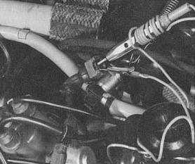
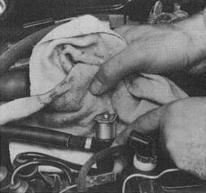

Engine floods due to defective cold-start valve.
Possible causes:
- Thermo-time switch does not switch off at higher temperatures.
Test instructions: Pull connector off cold-start valve and connect test
light as shown. Then operate starter: test light must NOT light up.

- Cold-start valve leaking.
Test instructions: Pull connector off cold-start valve. Detach cold-start
valve from intake air distributor but leave it connected to the fuel
ring main. Pull wire off coil terminal 1. Operate starter and check if
valve leaks.

If engine is still difficult to start:
Injectors leaking:
- Remove injectors but leave them connected to the ring main.
- Pull wire off terminal 1 on coil.
- Operate starter briefly and check if more than two drops leak from each injector each minute.
Replace leaking injectors.
If you have not found any defects so far the trouble involved is not a typical
hot starting trouble.
Continue to find the trouble under Engine does not start.